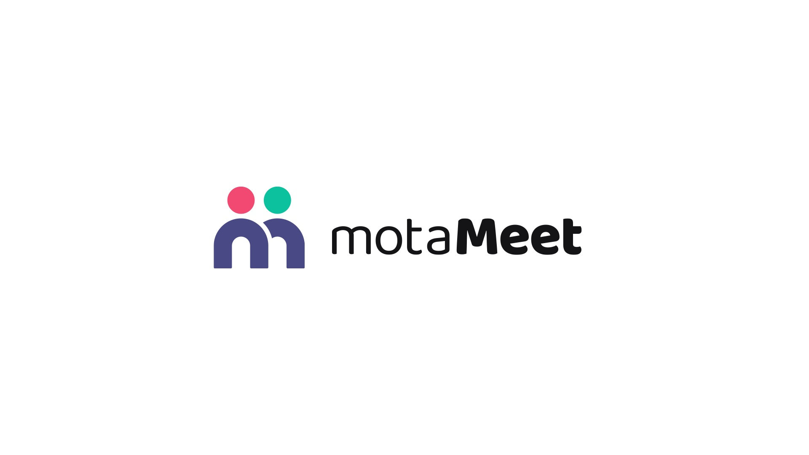
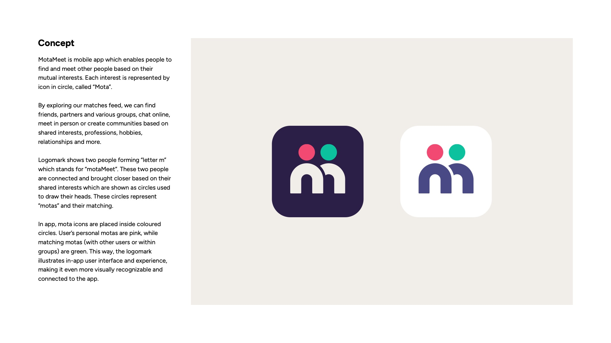
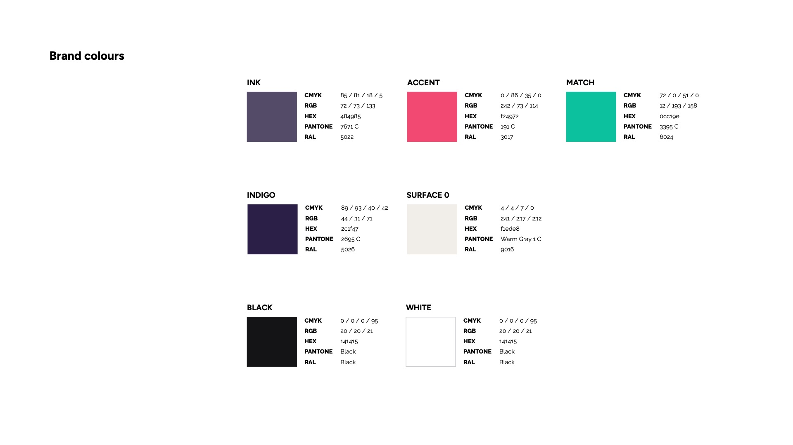

MotaMeet — two people, one shared interest. (2026)
MotaMeet helps people find and meet others through shared interests. Each interest is an icon in a circle — a “mota”. The new logomark shows two people forming the letter m, their heads drawn as two matching motas.

Concept
In the app you explore a matches feed to find friends, partners and groups, chat, meet in person or build communities around interests, professions and hobbies.
The two figures are brought together by what they share. The circles used for their heads are the motas — and their match. See also the MotaMeet app case study.

Logomark construction
The mark is built on a 480 × 480 px grid of 20 × 20 tiles, with a 24 px unit. A base shape is adjusted, then cut to split the m into two people meeting, and the corners are refined with a 6 px radius.
Logomark
Positive and negative versions, in monochrome and in colour.
Logotype & lockups
The logotype is set in Ballo Thambi 2 with adjusted letter spacing. Horizontal and vertical lockups each have a construction and minimum safe space.
App icon & profile picture
The icon is sized and positioned to sit well in rounded squares and circles.
Colour
Indigo and ink anchor the brand; accent and match colours bring the two motas to life.

Logo animation
The two motas drop in, the people form the m and the wordmark settles below.